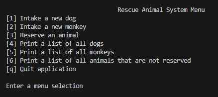

Category 1: Software Engineering and Design
The artifact I selected for enhancement is my Rescue Animal Management System, originally developed as a Java-based console application for the IT-145 course. The program allowed users to intake, reserve, and list rescue dogs and monkeys, storing animal data in memory using ArrayList. While it worked for a console environment, it was very limited. It had no real database, no user interface, and no way to use the application outside of development environments.
For this course, I chose to significantly enhance this artifact by transforming it into a full-stack web application. I developed a multi-layers system that includes:
- Spring Boot (java) for backend REST API.
- MongoDB as a persistent database.
- Angular for the frontend user interface.
The result is a fully interactive and responsive application where users can view, filter, and manage rescue animals through a modern web interface.
Angular Frontend Animal List View

Mobile Angular Frontend Animal List View

I chose to include this artifact in my ePortfolio because it showcases both my growth and current capabilities in software design, full-stack development, RESTful APIs, and database management. The project brings together everything I've learned about frontend design, backend development, database storage, and application security. I built a secure backend with Spring Boot that exposes REST API endpoints.
I connected that to an Angular frontend where users can interact with the data. I also added a login system that uses JWT (JSON Web Tokens) and encrypted
passwords with BCrypt so only admins can make changes to the animal list.
 I changed the code so that dogs and monkeys are now handled through one flexible Animal class,
which makes the project easier to expand if we want to add more animals in the future.
I changed the code so that dogs and monkeys are now handled through one flexible Animal class,
which makes the project easier to expand if we want to add more animals in the future.
The artifact directly supports the course outcome related to software engineering, software design, and databases. It shows that I can build an organized, layered backend, interact with a database, and create a frontend that communicates securely with the backend. I followed the enhancement plan I submitted earlier in the course and have completed the upgrades as planned, so there are no changes needed to my plan. I also made progress on outcomes relating to secure development practices.
Working on this project taught me a lot about how real applications are built. I learned how to connect the frontend and backend through API calls and how to send and verify JWT tokens to protect certain features. I learned how to handle CORS issues, how to upload and display images using Angular and Spring Boot, and how to make the user interface more compact and organized. It wasn't as easy as I thought it would be. One of the biggest challenges I faced was getting the authentication system to work properly and making sure that only admins could perform certain actions. I also had trouble at first getting images to upload and display correctly from the database but eventually solved the problem by improving how the data was stored and retrieved. As I made progress, I also spent time cleaning up the frontend layout to reduce spacing and improve the look and feel of the animal cards.
This enhancement turned a basic, text-based Java program into a complete, real-world application that could actually be used by a rescue organization. It demonstrates my skills in full-stack development, software design, and secure coding. More importantly, it shows my ability to take something simple and build it into something much more powerful and user-friendly. That's why I'm proud to include this project in my ePortfolio as a reflection of my skills, my growth, and my ability to deliver professional-quality work.